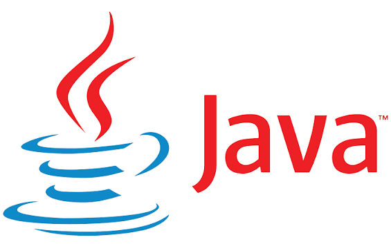

Java es una plataforma informática de lenguaje de programación creada por
Sun Microsystems en 1995. Ha evolucionado desde sus humildes comienzos hasta
impulsar una gran parte del mundo digital actual, ya que es una plataforma
fiable en la que se crean muchos servicios y aplicaciones. Los nuevos e
innovadores productos y servicios digitales diseñados para el futuro también
siguen basándose en Java.
Una de las principales ventajas de desarrollar software con Java es su portabilidad.
Una vez que haya escrito el código para un programa Java en una computadora portátil,
podrá trasladarlo fácilmente a un dispositivo móvil. Cuando James Gosling de Sun
Microsystems (posteriormente, adquirida por Oracle) inventó el lenguaje en 1991,
el objetivo principal era poder “escribir una vez y ejecutar en cualquier lugar”.
